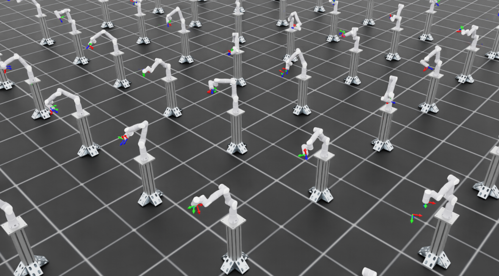

Training a Reach Policy for Real Robot Deployment#
This tutorial walks you through training an end-effector pose tracking (reach) reinforcement learning (RL) policy that transfers from simulation to a real robot. By the end of this guide, you will have a trained policy capable of controlling a robot arm to reach arbitrary target end-effector poses within its workspace.
Supported Robots:
Universal Robots UR10e: 6-DOF industrial robot arm
Flexiv Rizon 4s: 7-DOF collaborative robot arm
Scope of This Tutorial:
This tutorial focuses on the training portion of the sim-to-real workflow. For deployment on real hardware, including robot interface setup and ROS inference node configuration, refer to the Isaac ROS Documentation.
Prerequisites:
Before starting this tutorial, ensure you have Isaac Lab installed and configured. Follow the installation guide if you haven’t already set up your environment.
Task Overview#
The reach task trains a policy to track randomly sampled end-effector poses within the robot’s workspace.
How It Works:
A target pose (position and orientation) is randomly sampled within a defined workspace
The policy receives the current joint states and the target pose as observations
The policy outputs incremental joint position commands to move the end-effector toward the target
The target is resampled periodically during training to ensure the policy generalizes across the workspace
Key Concepts for Sim-to-Real Transfer#
Successful sim-to-real transfer requires consistency across three areas:
Input Consistency: Observations available in simulation must match those available on the real robot
System Response Consistency: The simulated robot must respond to actions similarly to the real robot
Output Consistency: Any post-processing on policy outputs must be replicated during deployment
When these are properly addressed, policies trained purely in simulation can transfer to real hardware without any real-world training data.
Observation Space#
The policy receives only proprioceptive observations, which are reliably available from the robot controller:
Observation |
UR10e Dim |
Rizon 4s Dim |
Source |
|---|---|---|---|
|
6 |
7 |
Robot joint encoders |
|
6 |
7 |
Robot joint encoders |
|
7 |
7 |
Target pose (3D position + quaternion) |
Total observation dimension: 19 (UR10e) or 21 (Rizon 4s)
Implementation:
@configclass
class PolicyCfg(ObsGroup):
"""Observations for policy group."""
joint_pos = ObsTerm(func=mdp.joint_pos, noise=Unoise(n_min=-0.0, n_max=0.0))
joint_vel = ObsTerm(func=mdp.joint_vel, noise=Unoise(n_min=-0.0, n_max=0.0))
pose_command = ObsTerm(func=mdp.generated_commands, params={"command_name": "ee_pose"})
def __post_init__(self):
self.enable_corruption = True
self.concatenate_terms = True
Note
The noise terms are set to zero by default (Unoise(n_min=-0.0, n_max=0.0)), meaning no observation noise is applied. This can be adjusted if noise modeling is desired for additional robustness. Modern robot controllers provide sufficiently accurate joint state feedback that adding noise during training is not required for sim-to-real transfer of this task.
Action Space#
The policy outputs incremental joint position commands. Each action specifies a delta (change) to apply to the current joint positions:
self.actions.arm_action = mdp.RelativeJointPositionActionCfg(
asset_name="robot",
joint_names=[".*"],
scale=0.0625, # ~3.6 degrees per action step
use_zero_offset=True,
)
self.actions.arm_action = mdp.RelativeJointPositionActionCfg(
asset_name="robot",
joint_names=["joint[1-7]"],
scale=0.0625, # ~3.6 degrees per action step
use_zero_offset=True,
)
The action scale of 0.0625 radians (~3.6 degrees) per step provides a balance between responsiveness and smooth motion. The UR10e uses [".*"] to match all joints, while the Rizon 4s explicitly specifies ["joint[1-7]"] to match its 7 arm joints.
Action dimension: 6 (UR10e) or 7 (Rizon 4s)
Robot Configurations#
Each robot has specific actuator configurations and workspace definitions.
The UR10e is a 6-DOF industrial robot with the following actuator configuration:
actuators = {
"shoulder": ImplicitActuatorCfg(
joint_names_expr=["shoulder_.*"],
stiffness=1320.0,
damping=72.66,
friction=0.0,
armature=0.0,
),
"elbow": ImplicitActuatorCfg(
joint_names_expr=["elbow_joint"],
stiffness=600.0,
damping=34.64,
friction=0.0,
armature=0.0,
),
"wrist": ImplicitActuatorCfg(
joint_names_expr=["wrist_.*"],
stiffness=216.0,
damping=29.39,
friction=0.0,
armature=0.0,
),
}
End-Effector:
Link:
wrist_3_linkDefault orientation: End-effector facing down (roll = pi, yaw = -pi/2)
Target Workspace:
# Position (meters, relative to robot base)
pos_center = (0.8875, -0.225, 0.2)
pos_range = (0.25, 0.125, 0.1) # ±25cm x, ±12.5cm y, ±10cm z
# Orientation (radians)
rot_center = (pi, 0.0, -pi/2)
rot_range = (pi/6, pi/6, pi*2/3) # ±30 deg roll/pitch, ±120 deg yaw
The Rizon 4s is a 7-DOF collaborative robot with different torque, speed, and stiffness characteristics per joint group:
actuators = {
# Joints 1-2: Higher torque (123 Nm), lower speed
"shoulder": ImplicitActuatorCfg(
joint_names_expr=["joint[1-2]"],
effort_limit_sim=123.0,
velocity_limit_sim=2.094, # 120 deg/s
stiffness=6000.0,
damping=108.5,
friction=0.0,
armature=0.0,
),
# Joints 3-4: Medium torque (64 Nm), medium speed
"elbow": ImplicitActuatorCfg(
joint_names_expr=["joint[3-4]"],
effort_limit_sim=64.0,
velocity_limit_sim=2.443, # 140 deg/s
stiffness=4200.0,
damping=90.7,
friction=0.0,
armature=0.0,
),
# Joints 5-7: Lower torque (39 Nm), higher speed
"wrist": ImplicitActuatorCfg(
joint_names_expr=["joint[5-7]"],
effort_limit_sim=39.0,
velocity_limit_sim=4.887, # 280 deg/s
stiffness=1500.0,
damping=54.2,
friction=0.0,
armature=0.0,
),
}
End-Effector:
Link:
flangeDefault orientation: End-effector facing down (roll = pi)
Target Workspace:
# Position (meters, relative to robot base)
pos_center = (0.4, 0.0, 0.4)
pos_range = (0.4, 0.4, 0.35) # ±40cm x, ±40cm y, ±35cm z
# Orientation (radians)
rot_center = (pi, 0.0, 0.0)
rot_range = (pi/2, pi/2, pi) # ±90 deg roll/pitch, ±180 deg yaw
Customizing the Workspace#
You may need to modify the target workspace to match your deployment scenario. Key parameters you can adjust:
Target Position Range
Modify target_pos_centre and target_pos_range in the robot-specific config file (e.g., joint_pos_env_cfg.py):
# Center of the target workspace (meters, relative to robot base)
self.target_pos_centre = (0.5, 0.0, 0.4)
# Half-extents of the workspace in each dimension
self.target_pos_range = (0.2, 0.2, 0.15) # ±20cm x, ±20cm y, ±15cm z
Effects:
Larger ranges increase task difficulty but improve generalization
Ensure all target positions are reachable by the robot (within kinematic limits)
Targets outside reachable workspace will cause the policy to fail
Target Orientation Range
Modify target_rot_centre and target_rot_range:
# Center orientation (roll, pitch, yaw in radians)
self.target_rot_centre = (math.pi, 0.0, 0.0)
# Range of rotation variation around the center
self.target_rot_range = (math.pi/6, math.pi/6, math.pi) # ±30 deg, ±30 deg, ±180 deg
Effects:
Wider orientation ranges train more versatile policies but may slow convergence
Very wide ranges (e.g., full rotation) significantly increase training difficulty
Action Scale
Modify the scale parameter in the action configuration:
self.actions.arm_action = mdp.RelativeJointPositionActionCfg(
asset_name="robot",
joint_names=[".*"],
scale=0.0625, # Decrease for finer control, increase for faster motion
use_zero_offset=True,
)
Effects:
Smaller scale: Finer control, smoother motion, but slower reaching
Larger scale: Faster motion, but potentially jerky or overshooting targets
The same scale must be used during deployment on the real robot
Target Resampling Interval
Modify resampling_time_range in the commands configuration:
self.commands.ee_pose.resampling_time_range = (4.0, 4.0) # Resample every 4 seconds
Effects:
Shorter intervals: More diverse targets per episode, but less time to converge to each target
Longer intervals: More time to refine tracking, but fewer targets seen during training
Domain Randomization#
Domain randomization helps the policy generalize across variations in real robot behavior.
Actuator Gain Randomization:
robot_joint_stiffness_and_damping = EventTerm(
func=mdp.randomize_actuator_gains,
min_step_count_between_reset=200,
mode="reset",
params={
"asset_cfg": SceneEntityCfg("robot"),
"stiffness_distribution_params": (0.9, 1.1), # 90-110% of nominal
"damping_distribution_params": (0.75, 1.5), # 75-150% of nominal
"operation": "scale",
"distribution": "uniform",
},
)
The min_step_count_between_reset=200 ensures that actuator gains are not re-randomized too frequently, giving the policy time to adapt to each set of parameters before they change.
Joint Friction Randomization:
joint_friction = EventTerm(
func=mdp.randomize_joint_parameters,
min_step_count_between_reset=200,
mode="reset",
params={
"asset_cfg": SceneEntityCfg("robot"),
"friction_distribution_params": (0.0, 0.1), # Add 0-0.1 Nm friction
"operation": "add",
"distribution": "uniform",
},
)
Initial Joint Position Randomization:
reset_robot_joints = EventTerm(
func=mdp.reset_joints_by_offset,
mode="reset",
params={
"position_range": (-0.125, 0.125), # ±7 degrees
"velocity_range": (0.0, 0.0),
},
)
Reward Structure#
The policy is trained using a keypoint-based reward that captures both position and orientation accuracy:
@configclass
class RewardsCfg:
"""Reward terms for the MDP."""
# Linear penalty for keypoint tracking error
end_effector_keypoint_tracking = RewTerm(
func=mdp.keypoint_command_error,
weight=-1.5,
params={
"asset_cfg": SceneEntityCfg("ee_frame"),
"command_name": "ee_pose",
"keypoint_scale": 0.45,
},
)
# Exponential reward for fine precision
end_effector_keypoint_tracking_exp = RewTerm(
func=mdp.keypoint_command_error_exp,
weight=1.5,
params={
"asset_cfg": SceneEntityCfg("ee_frame"),
"command_name": "ee_pose",
"kp_exp_coeffs": [(50, 0.0001), (300, 0.0001), (5000, 0.0001)],
"kp_use_sum_of_exps": False,
"keypoint_scale": 0.45,
},
)
# Penalties for smooth motion
action_rate = RewTerm(func=mdp.action_rate_l2, weight=-0.005)
action = RewTerm(func=mdp.action_l2, weight=-0.005)
The keypoint-based reward places virtual markers on the end-effector frame and measures the distance to corresponding markers on the target frame. This provides a robust metric that naturally captures both position and orientation errors.
Training the Policy#
Step 1: Verify the Environment#
Before starting full training, launch a quick visualization run to verify the environment is set up correctly:
python scripts/reinforcement_learning/rsl_rl/train.py \
--task Isaac-Deploy-Reach-UR10e-ROS-Inference-v0 \
--num_envs 4 \
--visualizer kit
python scripts/reinforcement_learning/rsl_rl/train.py \
--task Isaac-Deploy-Reach-Rizon4s-ROS-Inference-v0 \
--num_envs 4 \
--visualizer kit
This opens the Isaac Sim viewer where you can observe the training in real-time.

Training visualization showing multiple parallel environments with robots reaching toward target poses.#
What to look for:
The robot should be moving its arm attempting to reach different poses
Early on, motion will be erratic as the policy explores; this is expected
For Rizon 4s: Target pose markers appear as coordinate frames in the scene
For UR10e: Target visualization is disabled (
debug_vis = False) because commands are generated in thebaseframe, which is 180 degrees offset from thebase_linkframe used for rendering. The robot will still track targets, but markers won’t be visible.
Once you confirm the environment looks correct, stop training with Ctrl+C and proceed to full-scale training.
Step 2: Full-Scale Training#
Launch full training with many parallel environments in headless mode:
python scripts/reinforcement_learning/rsl_rl/train.py \
--task Isaac-Deploy-Reach-UR10e-ROS-Inference-v0 \
--headless \
--num_envs 4096 \
--video --video_length 720 --video_interval 72000
python scripts/reinforcement_learning/rsl_rl/train.py \
--task Isaac-Deploy-Reach-Rizon4s-ROS-Inference-v0 \
--headless \
--num_envs 4096 \
--video --video_length 720 --video_interval 72000
Command breakdown:
--headless: Disables visualization for maximum training speed--num_envs 4096: Runs 4096 parallel environments for efficient data collection--video: Records videos to monitor training progress--video_length 720: Each video captures exactly one full episode (episode_length_s / (sim.dt * decimation)=12.0 / (1/120 * 2)= 720 steps)--video_interval 72000: Records a video every 72000 environment steps (~every 100 training iterations).
Training Configuration:
The training hyperparameters are the same for both robots:
num_steps_per_env = 512
max_iterations = 1500
save_interval = 50
empirical_normalization = True
obs_groups = {"policy": ["policy"], "critic": ["policy"]}
policy = RslRlPpoActorCriticCfg(
init_noise_std=1.0,
actor_hidden_dims=[256, 128, 64],
critic_hidden_dims=[256, 128, 64],
activation="elu",
)
algorithm = RslRlPpoAlgorithmCfg(
value_loss_coef=1.0,
use_clipped_value_loss=True,
clip_param=0.2,
entropy_coef=0.0,
num_learning_epochs=8,
num_mini_batches=8,
learning_rate=5.0e-4,
schedule="adaptive",
gamma=0.99,
lam=0.95,
desired_kl=0.008,
max_grad_norm=1.0,
)
The experiment_name is "reach_ur10e" for UR10e and "reach_rizon4s" for Rizon 4s. Training typically takes 1-3 hours depending on your GPU.
Step 3: Monitor Training Progress#
Use TensorBoard to monitor training metrics:
./isaaclab.sh -p -m tensorboard.main --logdir logs/rsl_rl/reach_ur10e
./isaaclab.sh -p -m tensorboard.main --logdir logs/rsl_rl/reach_rizon4s
Replace the log directory path with your actual training log location if different.
Key metrics to watch:
Mean reward: Should increase steadily and plateau once the policy converges
Reward terms: Monitor individual reward components to understand policy behavior:
end_effector_keypoint_tracking: Linear keypoint tracking penalty – should become less negative as the policy improvesend_effector_keypoint_tracking_exp: Exponential precision reward – should increase as the policy achieves finer trackingaction_rateandaction: Motion smoothness penalties – these are small in magnitude but should increase (become less negative) over training, indicating the policy is converging toward smoother motion
Position error: Tracks the Euclidean distance (in meters) between the end-effector and target position – should decrease over training
Orientation error: Tracks the angular difference between the end-effector and target orientation – should decrease over training
Step 4: Evaluate the Trained Policy#
Once training completes, evaluate the policy in the play environment:
python scripts/reinforcement_learning/rsl_rl/play.py \
--task Isaac-Deploy-Reach-UR10e-Play-v0 \
--num_envs 50 \
--visualizer kit
python scripts/reinforcement_learning/rsl_rl/play.py \
--task Isaac-Deploy-Reach-Rizon4s-Play-v0 \
--num_envs 50 \
--visualizer kit
The play environments disable observation corruption for cleaner evaluation and use fewer environments for better visualization.
Checkpoint Loading:
By default, play.py automatically loads the most recent checkpoint from the most recent training run. The script searches in logs/rsl_rl/<experiment_name>/ and selects the latest run folder and checkpoint file (sorted alphabetically).
To load a specific checkpoint, use these arguments:
# Load from a specific run folder
python scripts/reinforcement_learning/rsl_rl/play.py \
--task Isaac-Deploy-Reach-UR10e-Play-v0 \
--load_run 2025-01-15_14-30-00
# Load a specific checkpoint file
python scripts/reinforcement_learning/rsl_rl/play.py \
--task Isaac-Deploy-Reach-UR10e-Play-v0 \
--checkpoint /path/to/model_1500.pt
Step 5: Deploy on Real Robot#
Once satisfied with the trained policy, deploy it on real hardware using the Isaac ROS deployment pipeline. The pipeline uses:
The trained model checkpoint (
.ptfile)The
agent.yamlandenv.yamlconfiguration files generated during training
No additional export step is required.
For detailed deployment instructions, see the Isaac ROS Documentation.
Troubleshooting#
CUDA Out of Memory#
Error:
torch.OutOfMemoryError: CUDA out of memory.
Solutions:
Reduce parallel environments:
--num_envs 2048 # or 1024, 512, etc.
Disable video recording:
Remove the
--videoflags to free GPU memory.
Policy Does Not Converge#
If rewards do not improve after many iterations:
Check target workspace ranges: Ensure all target poses are reachable by the robot
Verify joint names: Confirm joint ordering matches between simulation and configuration
Reduce domain randomization: Temporarily disable randomization to verify the base task works
Jerky Motion on Real Robot#
If the deployed policy produces jerky or unstable motion:
Reduce action scale: Lower the
scaleparameter inRelativeJointPositionActionCfgVerify control frequency: Ensure the real robot runs at the same frequency as simulation (60 Hz by default)
Check joint ordering: Verify joint names and ordering match between simulation and real robot
Further Resources#
IndustReal: Transferring Contact-Rich Assembly Tasks from Simulation to Reality
FORGE: Force-Guided Exploration for Robust Contact-Rich Manipulation under Uncertainty
Gear Assembly Sim-to-Real Tutorial: Training a Gear Insertion Policy and ROS Deployment
RL Training Tutorial: Training with an RL Agent